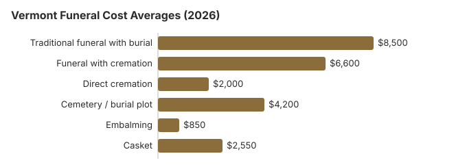

Funeral Costs in Vermont: What Families Pay in 2026
If you are planning a funeral in Vermont, understanding typical costs can help you make informed decisions. This guide covers average prices for traditional funerals, cremation, and burial in Vermont, along with consumer rights and practical ways to save.
Funeral Expenses Breakdown in Vermont
Individual prices in Vermont still vary by provider, and the VT Office of Professional Regulation licenses Vermont homes without setting their prices.
| Service | Average Cost | Range |
|---|---|---|
| Traditional funeral with burial | $8,500 | $6,375 – $11,050 |
| Funeral with cremation | $6,600 | $5,280 – $8,580 |
| Direct cremation | $2,000 | $1,400 – $2,800 |
| Cemetery / burial plot | $4,200 | $2,100 – $8,400 |
| Embalming | $850 | $500 – $1,500 |
| Casket | $2,550 | $850 – $6,800 |
Methodology note: These figures are our estimates, not a survey of local providers, and they are not a quote or professional advice. See how we calculate them or read the full disclaimer.
State sources: Vermont Office of Professional Regulation; Vermont DCF General Assistance burial rules; 33 V.S.A. § 2301; 18 V.S.A. §5323.

Payment Assistance and Vermont Final Expense Insurance
- Burial insurance: Burial insurance policies are a type of final expense insurance and life insurance policy meant to help cover funeral and burial expenses directly, and they may also help with other end-of-life expenses. They differ from traditional life insurance because they usually have lower coverage limits, so you can expect a coverage amount in the $5,000-$50,000 range when you determine how much coverage fits your budget. Most final expense insurance plans and many whole life insurance or whole life policies do not require a medical exam, may ask only a few health questions or other health questions, and are commonly purchased by seniors over 50, including people with health issues. Monthly premiums often run about $20-$100 and are typically fixed, so burial insurance premiums usually do not increase with age, and in most cases guaranteed acceptance or guaranteed coverage life policies generally do not expire as long as premiums are paid, though a waiting period may apply if you pass early in the policy. The funds are often paid within days as immediate tax-free cash to the beneficiary and can be used for funeral and burial costs, related fees, or any mortuary services rather than a specific funeral home, which can provide peace and help family members, loved ones, and the wider family avoid financial burdens during grief. A knowledgeable agent can help compare quotes and policy options.
Educational Resources
- Payment Assistance GuideGovernment programs and financial help for funeral costs
- FTC Funeral RuleThe federal rule protecting funeral consumers
- Funeral Consumers AllianceIndependent nonprofit consumer advocacy for funeral rights
- Funeral Insurance GuideCompare final expense and burial insurance options
- Insurance Plan ComparisonCompare coverage, premiums, and payout speed across providers
- Best Burial Insurance CompaniesSide-by-side comparison of top burial insurance providers
Compare Funeral Costs
- Cremation vs. Burial Cost ComparisonSide-by-side price comparison to help you decide
- Direct Cremation: Most Affordable OptionNFDA 2023 median $2,645 with a family-supplied container (latest available)
- Funeral Cost BreakdownEvery line item explained: know what you're paying for
- Average Funeral Cost in 2026National cost breakdown with real prices
- Cheapest Funeral OptionsLower-cost alternatives, with typical price ranges
- How to Compare Funeral PricesStep-by-step guide to getting the best price
Other Vermont Guides on This Site
Vermont cremations wait 24 hours after death, and the state allows natural burial grounds under 18 V.S.A. §5323:
Cremation Costs in Vermont
Complete guide to cremation pricing in Vermont including direct cremation from $2,000, cremation with service from $6,600, urn options, scattering regulations, and memorial alternatives. The cremation rate in Vermont is 72%.
Burial Costs in Vermont
Detailed breakdown of burial expenses in Vermont including cemetery plots from $4,200, caskets, vaults, headstones, and opening/closing fees. Total burial costs in Vermont range from $19,530 to $24,030.
Vermont Funeral Costs by City
Funeral costs vary across Vermont's major metropolitan areas. Here are the major cities in Vermont:
What's Specific to Vermont (Northeast)
Vermont has one of the highest funeral-home densities in the country, which usually helps consumers: more providers means more pricing competition and makes it easier to compare options. However, ownership consolidation by Service Corporation International (SCI) and similar groups has concentrated some of the Burlington market under a handful of brands. Ask each Vermont provider whether they are independently owned; independent operators in Vermont often undercut branded ones by 10-25%.
Hidden Funeral Fees in Vermont: What to Watch For
Most of the pricing surprises in Vermont come from a predictable list of add-ons.
- A funeral home may tell you embalming is mandatory, but Vermont law almost never requires it; ask which rule they mean.
Cremation vs. Burial in Vermont
Cremation
- Direct cremation from $2,000
- Cremation with service from $6,600
- No cemetery plot required
- More flexible memorial options
- Current rate: 72% of families
Traditional Burial
- Traditional burial in Vermont averages roughly $8,985 overall
- Cemetery plot from $4,200
- No Vermont statute requires a vault or grave liner; any requirement comes from the cemetery’s own rules, and the funeral home may not claim otherwise (FTC Funeral Rule, 16 CFR 453.3(c))
- Vermont’s 24-hour rule applies to cremation, not burial: a body may not be cremated until 24 hours after death, and a burial-transit permit is needed before either (18 V.S.A. § 5201)
- Permanent memorial location
- Metal casket: about $2,500 national median (NFDA 2023 General Price List Study); Vermont prices vary by seller
Your Consumer Rights and Burial Insurance in Vermont
If you believe a funeral home in Vermont has violated these rights, you can file a complaint with the FTC at ftc.gov or contact the Funeral Consumers Alliance for guidance. Questions or complaints about a burial or final-expense insurance policy go to the Vermont Department of Financial Regulation (dfr.vermont.gov). Vermont requires a 10-day free-look period by rule only for variable life policies (Insurance Regulation I-88-3), so for any other policy read its own return clause; many insurers voluntarily offer 10 to 30 days.
Why Funeral Prices Vary in Vermont
Several forces shape funeral pricing in Vermont. Regionally, the Northeast trends toward higher-than-average costs relative to the $8,300 US median, and within Vermont that gap widens between a dense metro like Burlington and the smaller towns: city prices routinely sit 10-30% higher.
The Least Expensive Ways to Hold a Funeral in Vermont
| Option | Estimated Cost | What's Included |
|---|---|---|
| Direct cremation | $2,000 | Cremation with no viewing or service; Vermont requires a 24-hour wait first (18 V.S.A. 5201). |
| Direct burial | $4,250 | Burial soon after death without embalming or viewing; the Vermont cemetery charges for the plot and opening separately. |
| Green burial | $4,675 | Natural burial without embalming or a vault, where a Vermont cemetery permits it. |
| Cremation + memorial | $6,600 | Cremation followed by a separate memorial service; 72% of Vermont deaths now end in cremation |
| Traditional funeral | $8,500 | Full service with viewing, ceremony, and burial, 2% above the $8,300 NFDA median |
For more strategies, see our guides on affordable funeral options, our funeral cost calculator to compare prices by state, and how to pay for a funeral with no money.
Planning a Funeral in Vermont: Where to Start
- In Vermont, the funeral cannot proceed until the death certificate has been issued.
- Ask how the funeral home will handle permits and document filing so there are no delays.
- Decide on disposition: cremation in Vermont or burial in Vermont.
Vermont death certificates: $10 a certified copy, plus $2 online
A certified Vermont death certificate costs $10, plus $2 if ordered online, and noncertified copies are free (Vermont Department of Health, order vital records; checked October 29, 2026). The Health Department says the town or city clerk is the fastest and cheapest place to get one, and clerks can issue any death certificate from 1909 on.
- Who may apply: family members, legal guardians and certain court-appointed parties, and for death certificates also the funeral home or crematorium, with valid ID.
- Mistakes: the certifying clinician, medical examiner, hospital, nursing home or funeral director corrects the record within six months of death, or amends it after that.
- State office: 280 State Drive, Waterbury (802-863-7275).
Funeral rules and help in Vermont
The Vermont Office of Professional Regulation licenses funeral directors and establishments in Vermont; call 802-828-1188 to check a license or file a complaint.
Hiring a funeral home is a choice, not a legal requirement, for most steps of a funeral in Vermont; the Funeral Consumers Alliance does not count Vermont among the nine states with funeral-director rules, and you can buy only the services you want.
Cremation timing: Vermont requires a 24-hour wait before cremation (18 V.S.A. 5201).
Vermont has no county government, so burial help comes from the state: DCF General Assistance can pay up to $1,100 toward a funeral, reduced by the resources of the deceased and a surviving spouse; other relatives and friends can add money without lowering it, and the funeral director and the person arranging must sign an itemized invoice. (Source: Vermont DCF General Assistance burial rules; 33 V.S.A. § 2301.) Social Security's one-time $255 death payment, paid only to a qualifying spouse or child, is small next to the $8,500 average Vermont funeral in the table.
Vermont's state-run veterans cemetery, Vermont Veterans Memorial Cemetery (802-828-3379), takes requests directly, and the VA supplies the veteran's headstone or marker there at no charge.
Next steps for a funeral in Vermont
- Get written price lists from at least two Vermont funeral homes before you agree to anything.
- Consider a Vermont memorial service after cremation or burial, which avoids embalming and viewing fees.
- Apply to the Vermont DCF Economic Services Division before the funeral; the itemized invoice must be signed.
- For a veteran, price Vermont Veterans Memorial Cemetery against a private Vermont plot before choosing.
- Keep the board's number, 802-828-1188, in case a funeral home will not honor its price list.
Frequently Asked Questions
What does a typical Vermont funeral cost in 2026?
Most Vermont families paying for a full traditional service see the bill settle around $8,500, near the $8,300 national benchmark. Cremation with ceremony runs closer to $6,600, while a stripped-down direct cremation in Vermont can land near $2,000. Cemetery plot fees in Vermont add about $4,200. Actual prices shift a lot depending on which Vermont provider you call first, which is why comparing is non-negotiable.
How much cheaper is cremation than burial in Vermont?
Direct cremation in Vermont starts around $2,000; a traditional funeral with burial averages $8,500, not counting the cemetery plot or vault. For most Vermont families, that is a difference of at least $6,500.
What are my consumer rights at Vermont funeral homes?
On top of the federal FTC Funeral Rule, Vermont licenses funeral directors through its Board of Funeral Service in the Office of Professional Regulation, which takes complaints about a Vermont funeral home.
What is the best way to reduce funeral expenses in Vermont?
The biggest lever is comparison shopping: two or three GPLs from different Vermont providers, compared line by line, consistently saves families $1,000 or more. Request frozen-ground pricing separately if the death is between December and March; Vermont cemeteries often charge extra in winter. Municipal, Catholic, and Jewish cemeteries in Vermont generally price below private memorial parks by $1,000 or more. At $2,000, direct cremation is the cheapest disposition option available in Vermont.
Do I have to embalm a loved one in Vermont?
Vermont allows natural burial grounds under 18 V.S.A. §5323, which exempts them from some platting and fencing rules when each grave is mapped or located by GPS. Buildings there are limited to winter storage and educational or devotional structures, and deeds must say so. Embalming is not needed for this kind of burial, and the FTC Funeral Rule bars a home from saying the law requires it when it does not. Check a license or file a complaint with the Vermont Office of Professional Regulation at 802-828-1188.
How do funeral costs in Vermont compare to other states?
Vermont's traditional-funeral average of $8,500 sits near the $8,300 national median, and the Northeast region overall trends toward higher pricing than the rest of the country.
What is the least expensive way to handle a funeral in Vermont?
Direct cremation, at about $2,000 in Vermont, covers transport, the cremation after the 24-hour wait and the return of the ashes. For a burial, direct burial without a viewing or ceremony is the lowest-cost choice at around $4,250 before cemetery fees, and a natural burial ground may cost less than a conventional cemetery.
What is the best way to find a cheap funeral home in Vermont?
Ask at least three Vermont providers for their General Price Lists and compare direct cremation and immediate burial lines. Buying the casket or urn elsewhere is allowed under the FTC Funeral Rule, and the Vermont home cannot charge a fee for it.